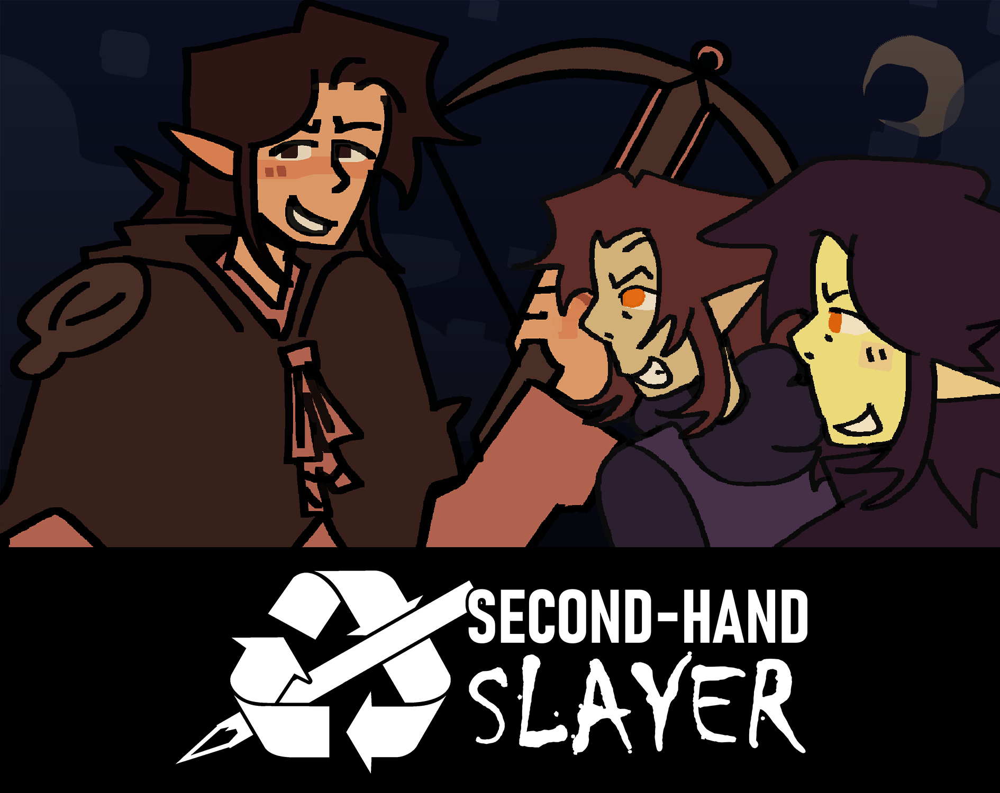

 Play as vampire hunter Ellie Harris as she embarks on a quest to escape a haunted mansion full of monsters and end the cycle of the undead. But wait... Where's her sword... and stakes..... and all the rest of her weapons? Uh oh. It seems for this expedition you will have to make do with make you find lying around, looping through your previously used ammo! Second Hand Slayer was a submission to the GMTK 2025 Game Jam, following the theme of "loop." It scored an average of 4 stars and was in the top 0.0077% in terms of enjoyment (#74 out of 9,605 participants). Within the game you can encounter characters such as Ellie Harris, Noelle Bergund, Freya Shan, and Elliot Harris. Fight your way through 6 fast-paced levels (plus a hardcore mode!) and aim for the fastest speedrun score. Click on the thumbnail image to play!